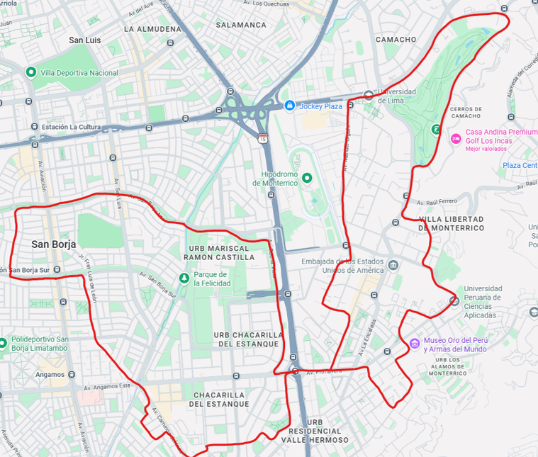

“Cuida tu cuerpo. Es el único lugar que tienes para vivir.” — Jim Rohn.
Experiencia CAS · Abril · Actividad
Asunto global y problema local
El sedentarismo y la falta de actividad física son problemas de salud pública mundiales, asociados al aumento de enfermedades y niveles de estrés. A nivel local y personal, el ritmo de vida escolar y el uso constante de tecnología limitan el tiempo dedicado al cuidado personal y al ejercicio físico, lo que afecta directamente la energía y la salud de los jóvenes.
Descripción de la experiencia
Inicié una rutina deportiva consistente en montar bicicleta todos los domingos, dedicando al menos una hora y media por sesión. El propósito fue mejorar mi estado físico y organizar mi tiempo libre de una manera más productiva y saludable.
Esta actividad la planifiqué como un acompañamiento a la nueva rutina de dieta y ejercicios de mi mamá, tomándolo como un reto personal. Durante las sesiones, me esforcé por mantener un ritmo constante, lidiando con las dificultades de transitar por las calles y la fatiga física inherente al inicio del entrenamiento.
Evidencias

Reflexión personal (Etapas CAS)
Investigación
Reconocí mi propia falta de condición física y decidí aprovechar la iniciativa de mi mamá para acompañarla y mejorar mi salud.
Preparación
Organicé mi tiempo libre de los domingos para garantizar al menos una hora y media exclusiva para esta actividad física.
Acción
Enfrenté el cansancio y la fatiga del primer día. Con el paso de las sesiones, logré adaptarme, recorriendo las mismas distancias sintiéndome mucho menos agotado.
Demostración
Logré superar un desafío físico y notar mi progreso real. Si mantengo esta rutina, mejoraré mi resistencia y mi habilidad para transitar con seguridad, demostrando la efectividad de la perseverancia deportiva.
Resultados de aprendizaje logrados
- RA 1: Identificar en uno mismo los puntos fuertes y las áreas en las que se necesita mejorar.
- RA 2: Mostrar que se han afrontado desafíos y se han desarrollado nuevas habilidades en el proceso.
- RA 4: Mostrar compromiso y perseverancia en las experiencias de CAS.